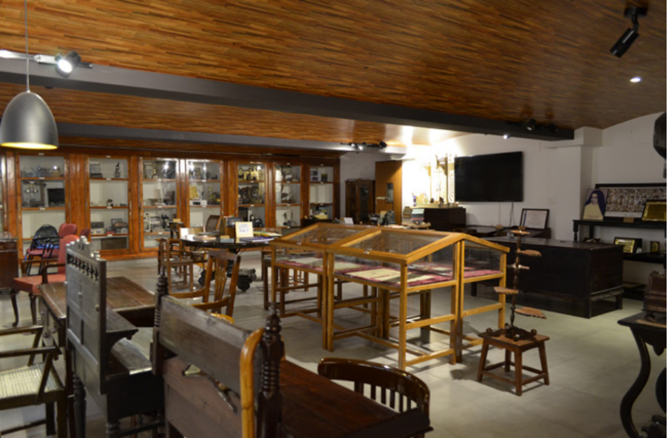

Imagine a room where you can smell a memory anytime you open a door, or every creak of the floorboard you
walk on tells a tale. That sounds like a very fictitious dramatic moment but we believe you get the point.
For those of you still racking your brains to figure out what the ramble is about, we are hinting towards
the concept of archives.
Archiving is understood as a collection of older things, meant as a means of preserving history.
And, yes our college also has an archive where you can learn about how Mount Carmel College
used to run back in the 60’ and 70’s. Right opposite the vending machine, follow the walls
on the left and you will find a fairly hidden, subtly dark staircase leading down, and voila,
you will find yourselves in a mini museum. Although, we warn you that the place is a labyrinth of sorts
and that you will lose track of time when you are down there.
Curated in 2017 by English department chair Miss Mary Mathew, the Carmel Archives was where the past met the present.
Unfortunately, it became like the lost city of Atlantis with no one bothered about it till the Head of the
History Department decided to give it a digital makeover, complete with a social media presence because who
says history can’t trend?
The brand-new Carmel Archives, version 2020 does not boast any ancient artifacts,
rare manuscripts, or any of that kind. But it does have ample old photographs and
journals of students and staff and their contributions. There are several articles
and heartfelt poems from those studying here 20-30 years ago, and when we brushed
through them, we felt the relatableness to surely exist today too. The old typewriters,
the grand piano, the old Convent nun uniform which is strikingly similar to that from the
movies, and even the random rocks in the commerce section may be items you have never
seen before, other than on the internet.
The credit for this whole rebranding of the archives goes to
the History Department. Their praise-worthy research and social skills
allowed them to reach out to the alumni and gather the necessary information
and photographs of the previous eras of the college. Their communication process
and marketing were so solid that not even the alumni, but rather their friends were
reaching out to give evidence of the fun times in college. If you want to guess who,
it's someone from the silver screen and the hint is on the social media page for the
archives!
- Divya Singh, Dhwani Dharamshi
- Seanna Mariann Reddy
As teens and young adults in the “Real World”, our online struggles are often dismissed, but “Kho Gaye Hum Kahan" offers a refreshing getaway from the usual blockbuster fare like ‘Animal’ and the upcoming ‘Fighter’.
The storyline is straightforward. Ahana, Imaad, and Neil (played by Ananya Pandey, Siddhant Chaturvedi, and Adarsh Gourav) tackle life's chaos– relationships, family, friendship– furled by the whirlwind of Social Media, alongside the chaos we create for ourselves, thanks to the omnipresent Social Media.
Ahana orchestrates an elaborate plan to make her ex boyfriend jealous, involving a fake Instagram account, staged dates and an illusion of a perfect life. Neil, a fitness enthusiast with dreams of his own Gym, grapples with a relationship kept under wraps by his famous influencer partner. Meanwhile, Imaad uses humour to both call out his friends' actions and spotlight the hypocrisy rampant on social media, all the while masking his own underlying trauma.
Their interactions, set against the backdrop of Instagram, mirror our own experiences. From the reflexive morning phone-check to the pursuit of followers through encounters with the famous, we all resonate with the duality of life – the one we lead 'irl' and the one we craft online.
Produced by Zoya Akhtar and Farhan Akhtar, the film echoes the seamless camaraderie seen in their previous works like Dil Chahta Hai and Zindagi Na Milegi Dobara. With an 8/10 on IMDb, a holiday release on OTT platforms (and a timely antidote to the disappointment of 'The Archies,’) “Kho Gaye Hum Kahan" proved to be a delightful experience. Its beautifully colour graded shots, seamlessly integrated music and strong bonds we all hope to have with our friends one day serve as an easy reminder to stop, take a breath and (not to sound like our parents) look beyond our phones.
- Mahi Aneja
Aries:
“Ask for feedback.” We’d say it’s really for your own good, but seems like you give yourself enough feedback. Keep up the wheel-steering, maybe next year you can take a break.
Taurus:
“Let go of grudges.” Honestly, we could tell you it’s a healthy thing but who doesn’t love holding a grudge now and then? Really spices life up, huh?
Gemini:
“Create a Vision Board.” You’re the centre of attention, you probably already created four vision boards and hate all of them. Let’s just let that one go.
Cancer:
“Express appreciation regularly.” It’s kind of a Herculean task and you haven’t moved on from ghosting since last year…let’s ignore this one.
Leo:
“Try a digital detox” You could but then honestly, how are people going to know what’s happening every single second of your entire life?
Virgo:
“Figure out what fills your cup.” You’re having a really good time filling cups for others and helping them out, let’s leave this on the backburner all over again, yeah?
Libra:
“Practice Saying 'No.'” But then you’ll probably stay up wondering whether people hate you for it…focusing on yourself too much is probably too selfish a move.
Scorpio:
“Start a Book Club.” Ideally sounds good but at some point, you might start trauma dumping on the rest of the members and I don’t think they’d be prepared for that.
Sagittarius:
“Go someplace you've never been.” Vacations are great for leaving behind your daily life but escapism probably shouldn’t be on your 2024 wishlist.
Capricorn:
“Avoid people who complain a lot.” They say it worsens your mood but you do love hearing people out…It should be fine, right?
Aquarius:
“Commit to a Cleaning Schedule.” It would be great to see you try but if you’re as inconsistent with wet wipes as you are with people then maybe we should just not try this year.
Pisces:
“Take a Yoga Class.” Last year this was supposed to help with that overthinking but instead, maybe you should take that money and put it into savings for the year…
- Samhita Vasisht
© THE CARMEL BEAT. ALL RIGHTS RESERVED.